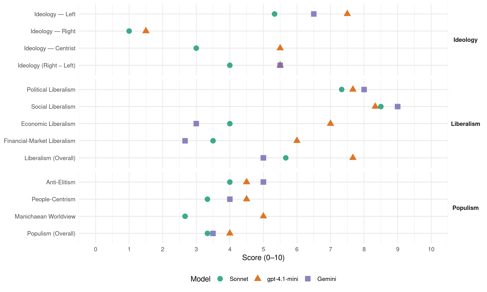

(Ireland, 2020)
manifesto_id 53321_202002
Get full text: This site shows derived annotations and short verbatim quotes only. The full manifesto text is © Manifesto Project / WZB — obtain it via manifesto-project.wzb.eu using the manifesto_id above.
Headline scores
| Dimension | Sonnet | gpt-4.1-mini | Gemini |
|---|---|---|---|
| Populism (Overall) | 3.3 | 4.0 | 3.5 |
| Anti-Elitism | 4.0 | 4.5 | 5.0 |
| People-Centrism | 3.3 | 4.5 | 4.0 |
| Manichaean Worldview | 2.7 | 5.0 | – |
| Ideology (Right − Left) | 4.0 | 5.5 | 5.5 |
| Liberalism (Overall) | 5.7 | 7.7 | 5.0 |
| Political Liberalism | 7.3 | 7.7 | 8.0 |
| Social Liberalism | 8.5 | 8.3 | 9.0 |
| Economic Liberalism | 4.0 | 7.0 | 3.0 |
| Financial-Market Liberalism | 3.5 | 6.0 | 2.7 |
Evidence per dimension
Economic Liberalism
Gemini · score 3.0 · verified · chunk 1
“leaving health, housing and other public services to the market”
Failing on our climate targets. Crisis after crisis caused by leaving health, housing and other public services to the market. The Social Democrats want to help move Ireland
Gemini · score 5.0 · mixed · chunk 2
“oppose any attempt to privatise”
Public Transport is a public good. The Social Democrats aim to keep it that way. We will oppose any attempt to privatise bus routes.
Gemini · score 3.0 · verified · chunk 3
“removing below-cost sales.”
Allow small and local producers to compete with larger national/international retailers by removing below-cost sales. Further develop horticulture and organic farming
gpt-4.1-mini · score 7.0 · verified · chunk 1
“We stand for investment in people, homes, healthcare”
Unlike others, we don’t believe we can slash taxes across the board and improve public services. Above all else, we stand for investment. Investment in people. Investment in homes, in healthcare, in transport, in environment, in time.
gpt-4.1-mini · score 7.0 · verified · chunk 2
“We are committed to maintaining the 12.5% corporate tax rate which is an important factor in our competitiveness”
In the near term, we are committed to maintaining the 12.5% corporate tax rate which is an important factor in our competitiveness as an FDI location– however, we would regularise our treatment of all companies to ensure that 12.5% is collected; For the medium term, we will seek to significantly improve capital investment, particularly in Broadband and Transport, to help bridge Ireland’s infrastructure deficit.
gpt-4.1-mini · score 7.0 · verified · chunk 3
“We support a fair and simpler CAP which ensures more farm payments targeted towards low-income farmers.”
We support a fair and simpler CAP which ensures more farm payments targeted towards low-income farmers. Protect biodiversity and support a move away from monoculture and intensive farming. Practical examples of these policies include wildflower borders on crop fields.
Sonnet · score 4.0 · verified · chunk 1
“market cannot be relied upon to deliver housing”
Time and again we have seen that the market cannot be relied upon to deliver housing. Instead the State should, and indeed must, step in.
Sonnet · score 6.0 · mixed · chunk 2
“maintaining the 12.5% corporate tax rate”
we are committed to maintaining the 12.5% corporate tax rate which is an important factor in our competitiveness as an FDI location
Sonnet · score 4.0 · mixed · chunk 3
“removing below-cost sales”
Allow small and local producers to compete with larger national/international retailers by removing below-cost sales.
Financial-Market Liberalism
Gemini · score 2.0 · verified · chunk 1
“eliminating all tax breaks for REITS and ‘Cuckoo’ Funds”
by introducing an effective specific tax, by closing all loopholes and by eliminating all tax breaks for REITS and ‘Cuckoo’ Funds Eradicating homelessness in the lifetime
Gemini · score 4.0 · verified · chunk 2
“cap money-lending charges and ensure”
We will cap money-lending charges and ensure the roll-out of the Micro-Credit Scheme
Gemini · score 2.0 · verified · chunk 3
“We would increase the Banking Levy to raise an additional €250m.”
write-downs on previous losses, the Social Democrats believe it is not unreasonable for tax- payers to expect some dividends. We would increase the Banking Levy to raise an additional €250m. Other Increase the minimum effective tax rate
gpt-4.1-mini · score 6.0 · verified · chunk 1
“Reforming the Central Bank”
Better Banking Sale of AIB Not-for-Profit Banking Reforming the Central Bank Financial Inclusion.
gpt-4.1-mini · score 6.0 · verified · chunk 2
“We will instil a zealous consumer-first approach in the Central Bank by setting down new standards”
We will overhaul the approach of the Central Bank in relation to the protection of consumers. For too long consumers have played second fiddle to other interests. We will instil a zealous consumer-first approach in the Central Bank by setting down new standards and accountability arrangements for the Central Bank through legislation.
Sonnet · score 4.0 · verified · chunk 1
“Sale of AIB”
Better Banking Sale of AIB Not-for-Profit Banking Reforming the Central Bank Financial Inclusion
Sonnet · score 5.0 · mixed · chunk 2
“much greater competition in banking”
We need much greater competition in banking, and it is critical we develop a strong not-for-profit banking sector to achieve this
Sonnet · score 3.0 · verified · chunk 3
“increase the Banking Levy to raise an additional €250m”
the Social Democrats believe it is not unreasonable for tax-payers to expect some dividends. We would increase the Banking Levy to raise an additional €250m.
Political Liberalism
Gemini · score 8.0 · verified · chunk 1
“Establish an Irish Electoral Commission”
Strengthen Transparency in Decision-Making38 Establish an Irish Electoral Commission40 Institute Meaningful Oireachtas Reform42
Gemini · score 8.0 · verified · chunk 2
“free and independent press is essential”
Communications Public Broadcasting A free and independent press is essential to the foundation of our democracy
gpt-4.1-mini · score 8.0 · verified · chunk 1
“We will establish a new Irish Electoral Commission”
The Social Democrats aim to change this by establishing a new Irish Electoral Commission to be headed up by a Chief Electoral Officer of Ireland. We believe that Irish electoral politics must instead be administered by an overarching independent statutory body, an Irish Electoral Commission.
gpt-4.1-mini · score 8.0 · verified · chunk 2
“We will establish a Defence Forces Pay Commission to tackle the retention crisis and establish a level of pay”
We will: Establish a Defence Forces Pay Commission to tackle the retention crisis and establish a level of pay that reflects the dedication that our soldiers and the dangers they are exposed to.
gpt-4.1-mini · score 7.0 · verified · chunk 3
“The Dail declaration in 2019 of a Climate and Biodiversity Crisis was very welcome.”
The Dail declaration in 2019 of a Climate and Biodiversity Crisis was very welcome. It must now be followed by action. There must also be the acknowledgement that the climate crisis and biodiversity loss are intrinsically linked and that both must be addressed in tandem.
Sonnet · score 8.0 · verified · chunk 1
“Trust is vital for a healthy democracy”
Trust is vital for a healthy democracy. If the public are to have trust in our politics and government, then transparency and integrity must be the defining features of all decision-making.
Sonnet · score 8.0 · verified · chunk 2
“free and independent press is essential”
A free and independent press is essential to the foundation of our democracy, and the Social Democrats have always been forthright and impactful in defending this institution.
Sonnet · score 6.0 · verified · chunk 3
“full and transparent consultation process”
Formalise walking routes through commonages in the uplands of Ireland with a full and transparent consultation process.
Liberalism (Overall)
Gemini · score 6.0 · verified · chunk 1
“Establish an Irish Electoral Commission”
Strengthen Transparency in Decision-Making38 Establish an Irish Electoral Commission40 Institute Meaningful Oireachtas Reform42
Gemini · score 6.0 · verified · chunk 2
“free and independent press is essential”
Communications Public Broadcasting A free and independent press is essential to the foundation of our democracy
Gemini · score 3.0 · verified · chunk 3
“removing below-cost sales.”
Allow small and local producers to compete with larger national/international retailers by removing below-cost sales. Further develop horticulture and organic farming
gpt-4.1-mini · score 8.0 · verified · chunk 1
“We will establish a new Irish Electoral Commission”
The Social Democrats aim to change this by establishing a new Irish Electoral Commission to be headed up by a Chief Electoral Officer of Ireland. We believe that Irish electoral politics must instead be administered by an overarching independent statutory body, an Irish Electoral Commission.
gpt-4.1-mini · score 8.0 · verified · chunk 2
“We will introduce effective hate crime legislation, in consultation with the LGBTI+ community”
Legislative Reform We will introduce effective hate crime legislation, in consultation with the LGBTI+ community, community groups, the Gardaí, and relevant stakeholders. We will continue the process of updating hate speech legislation will ensure that new laws are fit for purpose and uses up-to-date terminology.
gpt-4.1-mini · score 7.0 · verified · chunk 3
“We support a fair and simpler CAP which ensures more farm payments targeted towards low-income farmers.”
We support a fair and simpler CAP which ensures more farm payments targeted towards low-income farmers. Protect biodiversity and support a move away from monoculture and intensive farming. Practical examples of these policies include wildflower borders on crop fields.
Sonnet · score 6.0 · verified · chunk 1
“Trust is vital for a healthy democracy”
Trust is vital for a healthy democracy. If the public are to have trust in our politics and government, then transparency and integrity must be the defining features of all decision-making.
Sonnet · score 7.0 · verified · chunk 2
“free and independent press is essential”
A free and independent press is essential to the foundation of our democracy, and the Social Democrats have always been forthright and impactful in defending this institution.
Sonnet · score 4.0 · verified · chunk 3
“publicly funded single payer healthcare system”
The Social Democrats are fully committed to the cross-party Sláintecare reforms of the health service to create a publicly funded single payer healthcare system
Anti-Elitism
Gemini · score 4.0 · verified · chunk 1
“The same old ways of doing politics”
This election offers a real choice. One option continues our current path. The same old ways of doing politics. Failing on our climate targets.
Gemini · score 6.0 · verified · chunk 3
“Tackle the cartel-like practices in the beef processing sector.”
low-income farmers. Protect biodiversity and support a move away from monoculture. Tackle the cartel-like practices in the beef processing sector. Allow small and local producers to compete
gpt-4.1-mini · score 7.0 · verified · chunk 1
“the all too cosy nexus between business and politics”
It is clear that our government and our political system have not fully embraced transparent decision making or a culture of open government and good governance. The all too cosy nexus between business and politics is alive and well. Too often, decisions on the allocation of significant state resources are influenced by the interests of well-connected individuals and organisations without proper recourse to evidence-based analysis, equality proofing, poverty proofing or regulatory impact.
gpt-4.1-mini · score 2.0 · verified · chunk 2
“tackling corruption in Ireland through the establishment of an independent anti- corruption agency”
We are committed to tackling corruption in Ireland through the establishment of an independent anti- corruption agency. This will help our best businesses thrive through honest competition based on merit.
Sonnet · score 5.0 · verified · chunk 1
“cosy nexus between business and politics”
The all too cosy nexus between business and politics is alive and well. Too often, decisions on the allocation of significant state resources are influenced by the interests of well-connected individuals
Sonnet · score 3.0 · verified · chunk 2
“failure of successive Governments to properly plan”
The failure of successive Governments to properly plan, fund and deliver public transport programmes means that each of us live daily with the consequences.
Sonnet · score 4.0 · verified · chunk 3
“grossly unfair. The Government should not be subsidising”
The Social Democrats believe this scheme to be grossly unfair. The Government should not be subsidising very significant salaries when there are so many other priorities
Ideology — Centrist
gpt-4.1-mini · score 5.0 · verified · chunk 1
“Our politics are based on quality public services which serve the public interest”
Our politics are based on quality public services which serve the public interest. We seek to reshape work/life balance. To build a society which gets it right for children. To recreate an economy which is greener, but fairer too. These politics are rooted in integrity, honesty and a desire to restore trust in public life.
gpt-4.1-mini · score 6.0 · verified · chunk 2
“We believe that a United Ireland, achieved by consent, has the real potential to benefit the people”
We believe that a United Ireland, achieved by consent, has the real potential to benefit the people of the entire island economically, politically and culturally. We will therefore work towards achieving this in a spirit of mutual respect of all peoples who share this island and based on a foundation of Social Democratic principles.
Sonnet · score 3.0 · verified · chunk 1
“restore trust in public life”
These politics are rooted in integrity, honesty and a desire to restore trust in public life.
Sonnet · score 3.0 · verified · chunk 2
“Successive governments have consistently failed”
Successive governments have consistently failed to live up to the ambition, passion and confidence of our entrepreneurs and our workforce.
Sonnet · score 3.0 · verified · chunk 3
“Farmers, big and small, and their local communities”
three main priorities at all times: Farmers, big and small, and their local communities. Consumers of agricultural products, both at home and abroad.
Ideology — Left
Gemini · score 6.0 · verified · chunk 1
“leaving health, housing and other public services to the market”
Failing on our climate targets. Crisis after crisis caused by leaving health, housing and other public services to the market. The Social Democrats want to help move Ireland
Gemini · score 7.0 · verified · chunk 3
“ensures more farm payments targeted towards low-income farmers.”
We support a fair and simpler CAP which ensures more farm payments targeted towards low-income farmers. Protect biodiversity and support a move away
gpt-4.1-mini · score 8.0 · verified · chunk 1
“We stand for a uniquely Irish version of the Nordic model”
The Social Democrats want to help move Ireland in a new direction. We stand for a uniquely Irish version of the Nordic model. One that builds on Ireland’s strengths, but addresses the systemic failures of public policy. Unlike others, we don’t believe we can slash taxes across the board and improve public services. Above all else, we stand for investment.
gpt-4.1-mini · score 7.0 · verified · chunk 2
“We will introduce a statutory Living Wage grounded in social consensus and the evidence base on the cost of living”
The Social Democrats believe that every worker deserves a decent wage, a sense of security and fair representation. In Ireland today, even trained professionals like childcare workers are often denied a living wage, and vast numbers of workers live in poverty. We will introduce a statutory Living Wage grounded in social consensus and the evidence base on the cost of living.
Sonnet · score 6.0 · verified · chunk 1
“highest possible profit to developers and land speculators”
the clear aim is to deliver good quality housing at the lowest possible cost to purchasers and renters, rather than the highest possible profit to developers and land speculators.
Sonnet · score 5.0 · verified · chunk 2
“ban exploitative work practices, support organised labour”
The Social Democrats will ban exploitative work practices, support organised labour, collective bargaining, and the ICTU Charter
Sonnet · score 5.0 · verified · chunk 3
“more farm payments targeted towards low-income farmers”
We support a fair and simpler CAP which ensures more farm payments targeted towards low-income farmers.
Ideology (Right − Left)
Gemini · score 5.0 · verified · chunk 1
“leaving health, housing and other public services to the market”
Failing on our climate targets. Crisis after crisis caused by leaving health, housing and other public services to the market. The Social Democrats want to help move Ireland
Gemini · score 6.0 · verified · chunk 3
“ensures more farm payments targeted towards low-income farmers.”
We support a fair and simpler CAP which ensures more farm payments targeted towards low-income farmers. Protect biodiversity and support a move away
gpt-4.1-mini · score 6.0 · verified · chunk 1
“We stand for a uniquely Irish version of the Nordic model”
The Social Democrats want to help move Ireland in a new direction. We stand for a uniquely Irish version of the Nordic model. One that builds on Ireland’s strengths, but addresses the systemic failures of public policy.
gpt-4.1-mini · score 5.0 · verified · chunk 2
“We will introduce a statutory Living Wage grounded in social consensus and the evidence base on the cost of living”
The Social Democrats believe that every worker deserves a decent wage, a sense of security and fair representation. In Ireland today, even trained professionals like childcare workers are often denied a living wage, and vast numbers of workers live in poverty. We will introduce a statutory Living Wage grounded in social consensus and the evidence base on the cost of living.
Sonnet · score 5.0 · verified · chunk 1
“highest possible profit to developers and land speculators”
the clear aim is to deliver good quality housing at the lowest possible cost to purchasers and renters, rather than the highest possible profit to developers and land speculators.
Sonnet · score 4.0 · verified · chunk 2
“ban exploitative work practices, support organised labour”
The Social Democrats will ban exploitative work practices, support organised labour, collective bargaining, and the ICTU Charter
Sonnet · score 3.0 · verified · chunk 3
“more farm payments targeted towards low-income farmers”
We support a fair and simpler CAP which ensures more farm payments targeted towards low-income farmers.
Ideology — Right
gpt-4.1-mini · score 2.0 · verified · chunk 1
“ban all sales of properties to vulture funds”
We would ban all sales of properties to vulture funds, legislate to ensure that no families can be evicted into homelessness , and change the legal definition of a legal definition of landlord to include banks and receivers.
gpt-4.1-mini · score 1.0 · verified · chunk 2
“We oppose all discriminatory practise and language towards Travellers and support”
Traveller and Roma Equality. The systemic discrimination against Travellers across generations has resulted in stark inequalities between Travellers and Settled people. The Social Democrats will take a holistic approach to improving the living conditions and socio-economic opportunities of the Irish Traveller community. We will: Oppose all discriminatory practise and language towards Travellers and support.
Sonnet · score 1.0 · verified · chunk 1
“End Direct Provision”
End Direct Provision Direct Provision was only ever intended to be a short-term solution, yet in practice it is entirely unfit for purpose
Sonnet · score 1.0 · verified · chunk 2
“Establish a path for regularisation of undocumented migrants”
We will Establish a path for regularisation of undocumented migrants. Legislate to provide Irish born children normally resident an entitlement to citizenship rights.
Manichaean Worldview
gpt-4.1-mini · score 5.0 · verified · chunk 1
“Crisis after crisis caused by leaving health, housing and other public services to the market”
One option continues our current path. The same old ways of doing politics. Failing on our climate targets. Crisis after crisis caused by leaving health, housing and other public services to the market. The Social Democrats want to help move Ireland in a new direction.
Sonnet · score 3.0 · verified · chunk 1
“corrupt and illegal behaviour”
Various Tribunals and Commissions of Inquiry have come and gone with little consequences for corrupt and illegal behaviour.
Sonnet · score 2.0 · verified · chunk 2
“poorest in Ireland are paying the most”
This is completely unacceptable and means that the poorest in Ireland are paying the most for goods and services.
Sonnet · score 3.0 · verified · chunk 3
“cartel-like practices in the beef processing sector”
Tackle the cartel-like practices in the beef processing sector. Allow small and local producers to compete with larger national/international retailers
People-Centrism
Gemini · score 3.0 · verified · chunk 1
“putting people with disabilities at the heart”
Medicinal Cannabis24 Putting people with disabilities at the heart of all decisions25 Making Mental Health A Priority32
Gemini · score 5.0 · verified · chunk 3
“Farmers, big and small, and their local communities.”
main priorities at all times: Farmers, big and small, and their local communities. Consumers of agricultural products, both at home
gpt-4.1-mini · score 6.0 · verified · chunk 1
“People across Ireland hope for better”
These politics are rooted in integrity, honesty and a desire to restore trust in public life. People across Ireland hope for better. With the policies outlined here, we are asking them to vote for better in this election by voting Social Democrats.
gpt-4.1-mini · score 3.0 · verified · chunk 2
“every person in Ireland has a right to participate in arts and culture in their everyday life”
Arts at the Heart of Irish Life Every person in Ireland has a right to participate in arts and culture in their everyday life. Our policy recognises that arts and culture underpin our overall wellbeing and creativity, our innovation, and our social cohesion.
Sonnet · score 4.0 · verified · chunk 1
“serving the people of Ireland”
We must develop a culture that is focused on serving the people of Ireland, not powerful interests who have the ear of ministers and officials.
Sonnet · score 3.0 · verified · chunk 2
“every worker deserves a decent wage”
The Social Democrats believe that every worker deserves a decent wage, a sense of security and fair representation.
Sonnet · score 3.0 · verified · chunk 3
“ordinary tax-payers are funding a scheme”
It is simply outrageous that ordinary tax-payers are funding a scheme where people need a minimum salary of €75,000 to qualify.
Populism (Overall)
Gemini · score 3.0 · verified · chunk 1
“The same old ways of doing politics”
This election offers a real choice. One option continues our current path. The same old ways of doing politics. Failing on our climate targets.
Gemini · score 4.0 · verified · chunk 3
“Tackle the cartel-like practices in the beef processing sector.”
low-income farmers. Protect biodiversity and support a move away from monoculture. Tackle the cartel-like practices in the beef processing sector. Allow small and local producers to compete
gpt-4.1-mini · score 6.0 · verified · chunk 1
“the all too cosy nexus between business and politics”
It is clear that our government and our political system have not fully embraced transparent decision making or a culture of open government and good governance. The all too cosy nexus between business and politics is alive and well. Too often, decisions on the allocation of significant state resources are influenced by the interests of well-connected individuals and organisations without proper recourse to evidence-based analysis, equality proofing, poverty proofing or regulatory impact.
gpt-4.1-mini · score 2.0 · verified · chunk 2
“tackling corruption in Ireland through the establishment of an independent anti- corruption agency”
We are committed to tackling corruption in Ireland through the establishment of an independent anti- corruption agency. This will help our best businesses thrive through honest competition based on merit.
Sonnet · score 4.0 · verified · chunk 1
“cosy nexus between business and politics”
The all too cosy nexus between business and politics is alive and well. Too often, decisions on the allocation of significant state resources are influenced by the interests of well-connected individuals
Sonnet · score 3.0 · verified · chunk 2
“failure of successive Governments to properly plan”
The failure of successive Governments to properly plan, fund and deliver public transport programmes means that each of us live daily with the consequences.
Sonnet · score 3.0 · verified · chunk 3
“simply outrageous that ordinary tax-payers are funding”
It is simply outrageous that ordinary tax-payers are funding a scheme where people need a minimum salary of €75,000 to qualify.
Social Liberalism